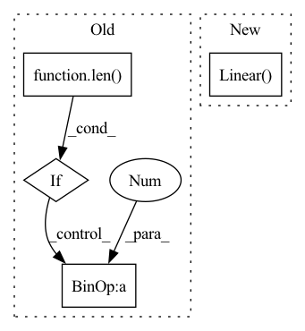

Pattern ID :19541
Before Change
final_process=None,
device="cuda:0"):
super(TCDNNet, self).__init__()
if len(att_layers) != len( tc_layers) + 1:
raise RuntimeError("There must be one more attention layer than that of temporal convolution layers.")
num_filters = int(m.ceil(m.log(seq_length, 2)))
self.layers = nn.ModuleDict()
channels = in_channels
for i in range(len(tc_layers)):
self.layers.add_module("attention_{}".format(i),
AttentionBlock(channels, att_layers[i][0], att_layers[i][1], device))
channels += att_layers[i][1]
self.layers.add_module("tconv_{}".format(i),
TCBlock(channels, seq_length, tc_layers[i], device))
channels += num_filters * tc_layers[i]
self.layers.add_module("attention_{}".format(len(att_layers)-1 ),
AttentionBlock(channels, att_layers[-1][0], att_layers[-1][1], device))
channels += att_layers[-1][1]
After Change
channels += additional_length
fc_layers = list(fc_layers) + [out_channels]
self.layers.add_module("fc_amalgamate", nn.Linear( seq_length, 1) .to(device))
for i in range(len(fc_layers)):
self.layers.add_module("fc_{}".format(i), nn.Linear(channels, fc_layers[i]).to(device))
channels = fc_layers[i]In pattern: SUPERPATTERN
Frequency: 3
Non-data size: 4
Instances Fragment ID: 63656393
Project Name: iffix/machin
Commit Name: 5b8d4a14723b753d9ee9d6dece151e40b3531c98
Time: 2020-04-25
Author: hanhanmumuqq@163.com
File Name: models/base/tcdnnet.py
M Class Name: TCDNNet
N Class Name: TCDNNet
M Method Name: __init__(11)
N Method Name: __init__(11)
M Parent Class: nn.Module
N Parent Class: nn.Module
M File Name: models/base/tcdnnet.py
N File Name: models/base/tcdnnet.py
M Start Line: 109
M End Line: 139
N Start Line: 195
N End Line: 218
Before Change
layers = []
current_size = feature_size[0]
current_channels = 1
for l_id in range(len( channels) ):
if l_id == len(channels) - 1:
layers.append(nn.Sequential(
nn.Linear(int(current_size * current_size * current_channels), latent_dims),
))
else:
layers.append(nn.Sequential( // input shape (1, current_size, current_size)
nn.Conv2d(
in_channels=current_channels, // input height
out_channels=channels[l_id], // n_filters
kernel_size=kernel_sizes[l_id], // filter size
stride=stride[l_id], // filter movement/step
padding=padding[l_id],
// if want same width and length of this image after Conv2d, padding=(kernel_size-1)/2 if
// stride=1
), // output shape (out_channels, current_size, current_size)
nn.ReLU(), // activation
nn.MaxPool2d(kernel_size=2), // choose max value in 2x2 area, output shape (16, 14, 14)
))
current_size = current_size / 2
current_channels = channels[l_id]
self.layers = nn.ModuleList(layers)
def forward(self, x):After Change
nn.Linear(int(current_size * current_size * current_channels), latent_dims),
)
self.fc_var = nn.Sequential(
nn.Linear( int(current_size * current_size * current_channels), latent_dims) ,
)
else:
self.fc = nn.Sequential( Fragment ID: 63656387
Project Name: jameschapman19/cca_zoo
Commit Name: a67b4d1253acfaa0d8f3b544104e7f329d975239
Time: 2021-02-17
Author: james.chapman.19@ucl.ac.uk
File Name: cca_zoo/deep_models.py
M Class Name: CNNEncoder
N Class Name: CNNEncoder
M Method Name: __init__(8)
N Method Name: __init__(8)
M Parent Class: BaseEncoder
N Parent Class: BaseEncoder
M File Name: cca_zoo/deep_models.py
N File Name: cca_zoo/deep_models.py
M Start Line: 116
M End Line: 154
N Start Line: 114
N End Line: 158
Before Change
mlp = []
for i in range(len(dims)-1):
mlp.append(nn.Linear(dims[i], dims[i+1]))
if i<len( dims) -2:
mlp.append(nn.ReLU())
if add_batchnorm:
mlp.append(nn.BatchNorm1d(dims[i+1 ]))
return nn.Sequential(*mlp)
After Change
])
else:
return nn.Sequential(*[
nn.Sequential(nn.Linear( channels[i - 1], channels[i]) , nn.ReLU())
for i in range(1, len(channels))
])
Fragment ID: 63656388
Project Name: mako443/text2pos-cvpr2022
Commit Name: 88c1c8af6aea88e3a9e528f30f519f4a6d1fbaef
Time: 2021-04-16
Author: manuel.kolmet@gmail.com
File Name: models/modules.py
M Class Name: AnonimousClass
N Class Name: AnonimousClass
M Method Name: get_mlp(2)
N Method Name: get_mlp(2)
M Parent Class:
N Parent Class:
M File Name: models/modules.py
N File Name: models/modules.py
M Start Line: 10
M End Line: 19
N Start Line: 21
N End Line: 30